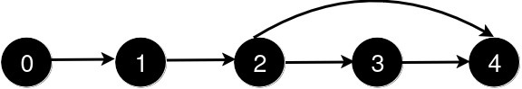
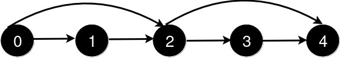
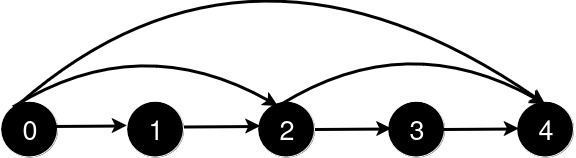
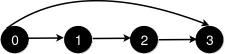
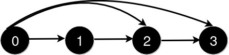

| Category | Difficulty | Likes | Dislikes |
|---|---|---|---|
| Algorithms | Hard | 204 | 6 |
array | greedy | graph | ordered-set
You are given an integer n and a 2D integer array queries.
There are n cities numbered from 0 to n - 1. Initially, there is a unidirectional road from city i to city i + 1 for all 0 <= i < n - 1.
queries[i] = [ui, vi] represents the addition of a new unidirectional road from city ui to city vi. After each query, you need to find the length of the shortest path from city 0 to city n - 1.
There are no two queries such that queries[i][0] < queries[j][0] < queries[i][1] < queries[j][1].
Return an array answer where for each i in the range [0, queries.length - 1], answer[i] is the length of the shortest path from city 0 to city n - 1 after processing the first i + 1 queries.
Example 1:
Input: n = 5, queries = [[2,4],[0,2],[0,4]]
Output: [3,2,1]
Explanation:

After the addition of the road from 2 to 4, the length of the shortest path from 0 to 4 is 3.

After the addition of the road from 0 to 2, the length of the shortest path from 0 to 4 is 2.

After the addition of the road from 0 to 4, the length of the shortest path from 0 to 4 is 1.
Example 2:
Input: n = 4, queries = [[0,3],[0,2]]
Output: [1,1]
Explanation:

After the addition of the road from 0 to 3, the length of the shortest path from 0 to 3 is 1.

After the addition of the road from 0 to 2, the length of the shortest path remains 1.
Constraints:
3 <= n <= 1051 <= queries.length <= 105queries[i].length == 20 <= queries[i][0] < queries[i][1] < n1 < queries[i][1] - queries[i][0]i != j and queries[i][0] < queries[j][0] < queries[i][1] < queries[j][1].